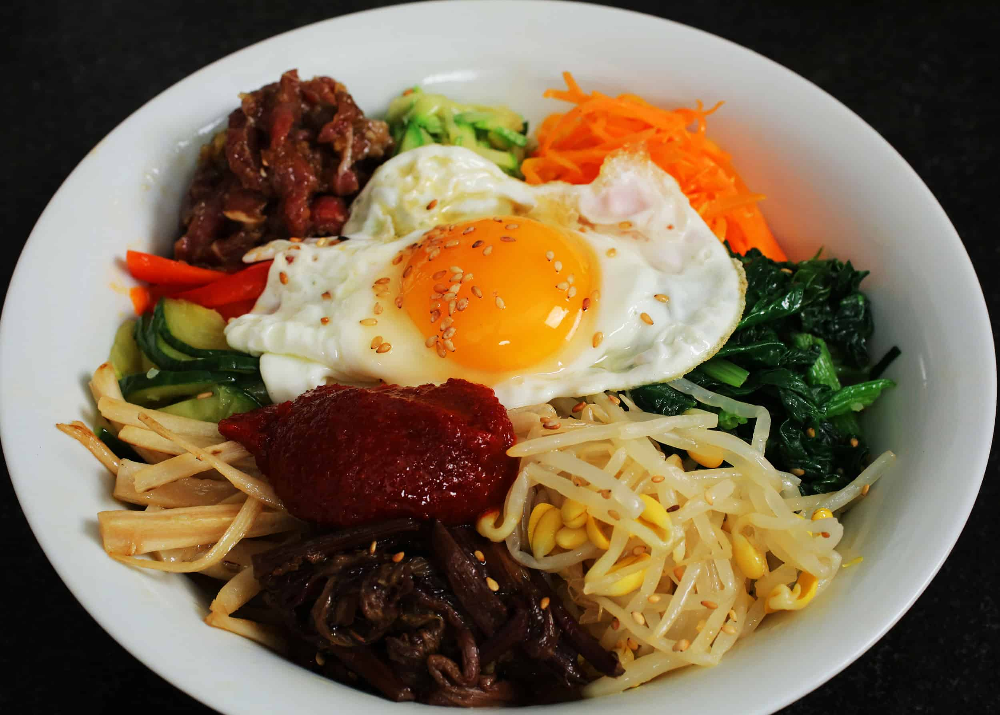

Bibimbap recipe

Description
Rice, vegetable, gochujang sauce
Ingredients
Meat and meat sauce
- 100g / 3.5 ounces beef mince (or other cuts)
- 1 Tbsp soy sauce
- 1 Tbsp sesame oil
- 1 tsp brown sugar
- 1/4 tsp minced garlic
vegetable and others
- 250g (0.6 pounds) seasoned spinach
- 350g (0.8 pounds) seasoned bean sprouts – (You don’t have to use them up if you think it’s too much but I love having lots of vegetables on my bibimbap!)
- 100g (3.5 ounces) shiitake mushroom
- 120g (4.2 ounces) carrots (1 small)
- 1/2 tsp fine sea salt (1/4 tsp each will be used when cooking shiitake mushroom and carrots)
- 3 to 4 serving portions of steamed rice
- 3 or 4 eggs (depending on the serving portion)
- Some cooking oil to cook the meat, mushroom, carrots and eggs – I used rice bran oil.
- Some toasted seasoned seaweed, shredded (long thin cut)
Bibimbap sauce
- 2 Tbsp gochujang
- 1 Tbsp sesame oil
- 1 Tbsp sugar – I used raw sugar
- 1 Tbsp water
- 1 Tbsp roasted sesame seeds
- 1 tsp vinegar – I used apple vinegar
- 1 tsp minced garlic
Instructions
- For meat, mix the beef mince with the meat sauce listed above. Marinate the meat for about 30 mins while you are working on other ingredients to enhance the flavour. Add some cooking oil into a wok and cook the meat on medium high to high heat. It takes about 3 to 5 mins to thoroughly cook it.
- Mix the bibimbap sauce ingredients in a bowl.
- Cook spinach and bean sprouts per linked recipe.
- Rinse, peel and julienne the carrots. Add some cooking oil and 1/4 tsp of fine sea salt in a wok and cook the carrots on medium high to high heat for 2 to 3 mins.
- Clean/rinse the shiitake mushrooms and thinly slice them. Add some cooking oil and 1/4 tsp of fine sea salt in a wok and cook the mushrooms on medium high to high heat until they are all cooked. (It takes 2 to 3 mins.)
- Make fried eggs. (While sunny side up is common, you can make them per your preference.)
- Put the rice into a bowl and add the meat, assorted vegetables, seasoned seaweed, bibimbap sauce, and the egg on top of the rice. Serve.
- To eat, mix the ingredients in the bowl, and enjoy!